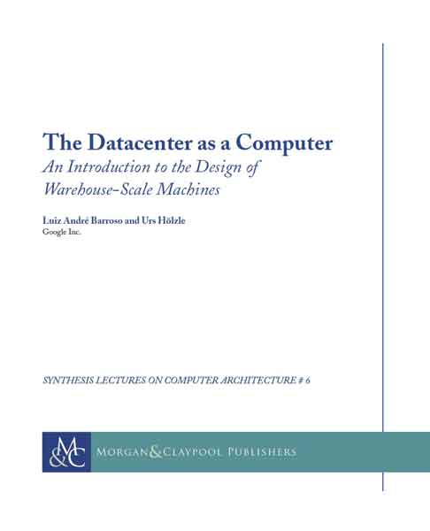
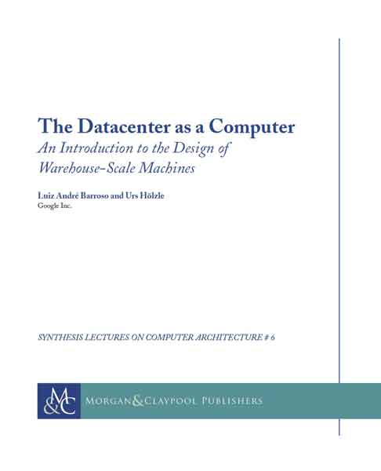

| Wk |
Date |
Lecture Topic |
Reading |
Section |
Lab |
Homework |
Project |
| 1 | 01/16 Tu | Intro, Number Representation | P&H: 2.4
Binary slides | Section 0: Number Representation | | HW0: Number Representation
Due 01/24 @ 23:59:59
Mini-bio
(Due in 2nd Section) | |
| 01/18 Th | C Intro, Pointers | Brian Harvey's Intro to C
K&R Ch. 1-5 |
| 2 | 01/23 Tu | C Arrays, Strings, Pointers | K&R Ch. 5-6
C Reference Slides | Section 1: C Basics | Lab 0: Intro, git, Number Rep | | Project 1: C
Due 02/01 @ 23:59:59 |
| 01/25 Th | C Memory Management, Usage | K&R: 7.8.5, 8.7 |
| 3 | 01/30 Tu | Intro to Assembly Language, RISCV Intro | P&H: 2.1-2.3 | Section 2: C Memory Management and RISCV Intro | Lab 1: C and GDB | HW1:
C to RISCV,
Instruction Format
Due 02/09 23:59:59 | Project 2-1: C and RISCV
Due 02/16 @ 23:59:59 |
| 02/01 Th | RISCV, RISCV Functions | P&H: 2.6 - 2.9, 2.10 |
| Guerrilla Session: C & Memory Management, 7-9 pm @ Soda 310 |
| 4 | 02/06 Tu | RISCV Instruction Formats | P&H: 2.5, 2.10 | Section 3:
RISCV II
Instruction Formats | Lab 2: Advanced C, Memory Management | | |
| 02/08 Th | Compiler, Assembler, Linker, Loader (CALL) | P&H: 2.12 |
| Guerrilla Session: RISCV, 7-9 pm @ Soda 310 |
| 5 | 02/13 Tu | Midterm 1 (7-9 pm) | Section 4:
RISCV Procedures
CALL | Lab 3: RISCV Assembly | | Project 2-2: RISCV
Due 02/23 @ 23:59:59 |
| 02/15 Th | Intro to Synchronous Digital Systems (SDS), Logic
| SDS Handout
Logic Handout
P&H: A.2-A.3 |
| 6 | 02/20 Tu | Functional Units, FSMs | Blocks Handout
P&H: A.3-A.6
State Handout | Section 5:
Logic and SDS | Lab 4: RISCV Functions, Pointers | HW2: FSM, Logic
Due 3/02 @ 23:59:59 | |
| 02/22 Th | RISCV Datapath, Single-Cycle Control Intro | P&H: 4.1, 4.3, 4.4 |
| 7 | 02/27 Tu | RISCV Single-Cycle Control | P&H: 4.5-4.8 | Section 6: Single-Cycle Datapath | Lab 5: Logisim | | Project 3-1: ALU and Regfile
Due 03/07 @ 23:59:59 |
| 03/01 Th | RISCV 5-Stage Pipeline/Hazards | P&H: 4.10, 4.11 |
| Guerrilla Session: SDS & Datapath Controls |
| 8 | 03/06 Tu | Memory Hierarchy, Fully Associative Caches | P&H: 5.1, 5.2, 5.3, 5.4, 5.8, 1.6
Cache Flowchart | Section 7: Pipelining | Lab 6: Pipelining and CPU Prep | HW3: Caches and Floating Point
Due 3/16 11:59:59 PM for Caches, 3/23 11:59:59 PM for floating point | Project 3-2: CPU
Due 03/23 @ 23:59:59 |
| 03/08 Th | Caches: Direct-mapped, Set-associative, Program Performance with Caches | See above |
| Guerrilla Session: Pipelining |
| 9 | 03/13 Tu | Multilevel Caches, Cache Questions | See above | Section 8: Caches | Lab 7: Caches | | |
| 03/15 Th | Performance, Floating Point, Tech Trends | P&H: 3.5. 3.9
IEEE 754 Simulator |
| Guerrilla Session: Caches |
| 10 | 03/20 Tu | Midterm 2 (8-10 pm) | Section 9: Floating Point, AMAT | Lab 8: Study for Midterm | | |
| 03/22 Th | Flynn Taxonomy, Data-Level Parallelism | P&H: 1.7, 1.8, 4.10, 4.11, 6.1, 6.2, 6.3, 6.7 |
| 11 | 03/27 Tu | Spring Recess: No Lecture | | Section 10: None | Lab 9: None | | |
| 03/29 Th | Spring Recess: No Lecture | |
| 12 | 04/03 Tu | Amdahl's Law, Thread-Level Parallelism, OpenMP Intro | P&H: 6.5, 5.10, 2.11
OpenMP Summary Card | Section 11: Flynn Taxonomy, Data & Thread Level Parallelism | Lab 10: SIMD Instructions | HW4: Parallelism, Performance Programming
Due 04/13 11:59:59 PM | Project 4: Performance Programming
Due 04/16 @ 23:59:59 |
| 04/05 Th | Cache Coherence, OpenMP Sharing Issues, Performance | P&H: 5.10 |
| 13 | 04/10 Tu | Warehouse Scale Computing, MapReduce (Spark) | The Datacenter as a Computer: Ch 1, Ch 2.4, Ch 3, 5.1-5.3 | Section 12: Spark and WSC | Lab 11: Thread-Level Parallelism | | |
| 04/12 Th | OS Support, Base and Bounds, Interrupts, Virtual Memory Intro | P&H: 5.13, 5.15, 5.16 |
| Guerrilla Session: Parallelism & MapReduce |
| 14 | 04/17 Tu | Virtual Memory Part 2 | P&H: 6.9, 4.9 | Section 13: Virtual Memory and IO | Lab 12: MapReduce and Spark | HW5: VM, I/O, Parity, and ECC
Due 4/27 @ 11:59:59 PM | Project 5-1: Microservices in Go
Due 4/30 @ 23:59:59 |
| 04/19 Th | I/O: DMA, Disks, Networking | P&H: 5.2, 5.5, 5.11 |
| 15 | 04/24 Tu | Dependability: Parity, ECC, RAID | P&H: 5.5, A-64 to B-66
Berkeley RAID Paper | Section 14: Parity, ECC, RAID | Lab 13: Virtual Memory | | Project 5-2: Microservices in Go: Testing
Due 4/30 @ 23:59:59 |
| 04/26 Th | Summary, What's Next? | None |
| Guerrilla Session: Virtual Memory |
| RRR | 05/01 Tu | NO LECTURE | | | | | |
| 05/03 Tu | NO LECTURE | |
| Final | 05/11 | Final (7-10 PM) | | | | |
|
 
